Seamonkey Input Method Specification
Author: Tague GriffithIn this document:
Input Method Editing Styles
Each platform (Macintosh, Windows, Unix/X) supports the input of several Asian languages (e.g. Japanese, Chinese, Korean) through a special system service called an Input Method. An input method is a software component that converts key presses into text input which can't be typed directly. Input methods are normally used to input text for languages which have more characters than can fit on a standard keyboard. Input methods are commonly used for Japanese, Chinese and Korean but also show up in other languages like Thai and Hindi.
There are four basic style of input method editing: on-the-spot, over-the-spot, off-the-spot, and root-window. Only two of the styles (on-the-spot and root window) are supported on Macintosh and Windows. The XIM (X Input Method) standard defines all four styles, but does not require an application or input method to support a particular set of them. The style used is negotiated from the set of common styles supported by the application and the input method.
On-The-Spot
The composed text is rendered inside the text window by the application, by maintaining a special editing area "between" the text before the insertion point and the text after the insertion point. The composed text looks like text part of the document, however, different stylistic attributes are applied to the text into indicate that it is part of the input method composition string. Different parts of the input method composing string will have different styles applied to them, which indicates that they are in different stages of editing. Once the composition text is finalized by the user, it merges into the original document and is indistinguishable from the surrounding text. The on-the-spot style is also know as inline input on some platforms.
Example of On-The-Spot Composition Style
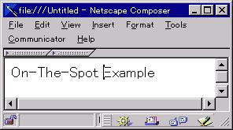 The user types some English text prior to inputting Japanese text. Using the arrow keys, the user moves the insertion position between "Spot " and "Example" and switches his keyboard into Japanese Mode. (This can be done through a hot key or a system menu)
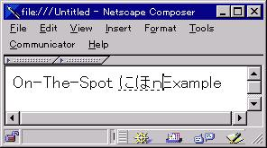 The user begins to type some Japanese phonetically into the edit area. The user types the series [n,i,h,o,n] which the input method automatically translates into the two Japanese syllables displayed on the right. The Romanized "n" remains because it's conversion is still ambiguous. As the user typed, the editor automatically expand the composition area by moving the text "Example" as it inserted the Japanese text. The Japanese text is displayed displayed with a dotted underline to indicate that it is unconverted text and still has additional input steps to go through.
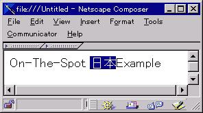 Now that the user has entered the pronunciation of the word they want to add into the document ("nihon" or the Japanese word for Japanese), the user selects the appropriate Kanji conversion for the syllables. Since a single syllable has multiple possible conversions, the input method will bring up a list of possible candidates. The user selects the appropriate conversion which is then displayed in the document window. Once the user selects the appropriate conversion, the underline style of the text changes.
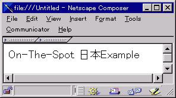Finally, the User performs some action (usually pressing the return key) which commits the final text. The Japanese text is merged into the document and is indistinguishable from the surrounding text.
Over-The-Spot Composition Style
The composed text is rendered over the insertion point in a "layer" above the document window. The document text doesn't change until the after the user has committed the text, so the composed text ends up obscuring part of the document during editing.
Example of Over-The-Spot Composition Style
The user types some English text prior to inputting Japanese text. Using the arrow keys, the user moves the insertion position between "Spot " and "Example" and switches his keyboard into Japanese Mode. (This can be done through a hot key or a system menu)
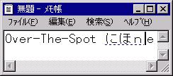 The user begins to type some Japanese phonetically into the edit area. The user types the series [n,i,h,o,n] which the input method automatically translates into the two Japanese syllables displayed on the right. As the user typed, in this style the editor draws the composing text over the the text "Example" in the document.
 Next
the user selects the appropriate Kanji conversion for the syllables.
Since a single syllable has multiple possible conversions, the input method
will bring up a list of possible candidates. The user selects the
appropriate conversion which replaces the phonetic syllables. The
new candidate text is still drawn over the original document text.
Next
the user selects the appropriate Kanji conversion for the syllables.
Since a single syllable has multiple possible conversions, the input method
will bring up a list of possible candidates. The user selects the
appropriate conversion which replaces the phonetic syllables. The
new candidate text is still drawn over the original document text.
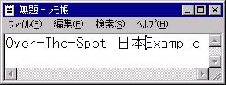 When the user commits the composed text, it is inserted into the document. Unlike on-the-spot input the new text is inserted as a single operation, instead of a series of changing strings.
Off-the-Spot composition style
The off-the-spot composition style is very similar to the root window style. These two styles are distinguished only by the position of the editing region. The off-the-spot style draws the editing region in a status bar attached to the bottom of the active window. Each application window has a status and editing bar, instead of having a single independent window.
Example of Off-The-Spot Composition Style
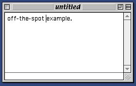 The user types some English text prior to inputting Japanese text. Using the arrow keys, the user moves the insertion position between "Spot " and "Example" and switches his keyboard into Japanese Mode. (This can be done through a hot key or a system menu)
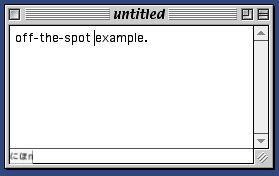 The user begins to type some Japanese phonetically into the edit area. The user types the series [n,i,h,o,n] which the input method automatically translates into the two Japanese syllables displayed on the right. As the user typed, in this style the editor draws the composing text in a status bar at the bottom of the document.
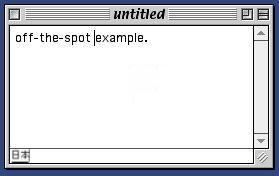Next the user selects the appropriate Kanji conversion for the syllables. Since a single syllable has multiple possible conversions, the input method will bring up a list of possible candidates. The user selects the appropriate conversion which replaces the phonetic syllables. The new candidate text is still drawn in the status bar.
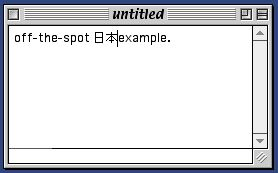When the user commits the composed text, it is inserted into the document. Unlike on-the-spot input the new text is inserted as a single operation, instead of a series of changing strings.
Root Window composition style
The composed text is rendered in an entirely separate window which has no relationship to the application window. Once the input is committed, it is then inserted into the document at the insertion point. The Root window style is also know as bottom line or floating window on some platforms.
Example of Root Window Composition Style
 The
user types some English text prior to inputting
Japanese text. Using the arrow keys, the user moves the insertion position
between "Spot " and "Example" and switches his keyboard into Japanese Mode.
(This can be done through a hot key or a system menu)
The
user types some English text prior to inputting
Japanese text. Using the arrow keys, the user moves the insertion position
between "Spot " and "Example" and switches his keyboard into Japanese Mode.
(This can be done through a hot key or a system menu)
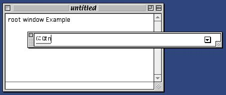The user begins to type some Japanese phonetically. The user types the series [n,i,h,o,n] which the input method automatically translates into the two Japanese syllables displayed on the right. As the user typed, the input method brings up a new window and displays the content in that window. This process is transparent to the application.
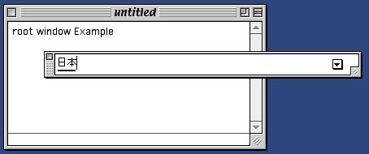 Now that the user has entered the pronunciation of the word they want to add into the document ("nihon" or the Japanese word for Japanese), the user selects the appropriate Kanji conversion for the syllables. This causes the text in the root window to change, but is transparent to the application.
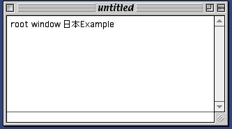Finally, the User performs some action (usually pressing the return key) which commits the final text. The Japanese text is merged into the document and is indistinguishable from the surrounding text.
Platform Protocols
On each platform, input methods are supported by a protocol defined by the platform's windowing system. The following sections give an overview of the protocols used on each of the major platforms which Seamonkey supports. Consult the platform documentation for more detailed information.
Windows
The windows input method protocol involves sending four different messages to the event handler of a particular window. To support the root window style, the input method sends WM_CHAR events to the application. Support for the on-the-spot (called inline in the Window's documentation) is done through the WM_IME_STARTCOMPOSITION, WM_IME_COMPOSITION, WM_IME_ENDCOMPOSITION messages. Windows does not use the off-the-spot or over-the-spot styles of input.
Root window support is handled by the system transparent to the application. The input method and the operating system handle displaying the various stages of composition input until the user confirms the composition string. The operating system handles confirmation by sending the application a sequence of WM_CHAR messages representing the final composition string.
Handling on-the-spot input is a bit more complex, in that the application must respond to three additional methods: WM_IME_STARTCOMPOSITION, WM_IME_ENDCOMPOSITION, and WM_IME_COMPOSITION. The WM_IME_STARTCOMPOSITION and WM_IME_ENDCOMPOSITION methods are used to bracket a single on-the-spot editing session. The application needs to respond to WM_IME_STARTCOMPOSITION by creating whatever internal state is necessary for maintaining the on-the-spot composition buffer. Conversely, the application responds to WM_IME_ENDCOMPOSITION by deleting the composition buffer and merging that text into the document.
The WM_IME_COMPOSITION method contains a string which represents the current state of the composition buffer. The application needs to extract this string (using ImmGetCompositionString) along with the associated composition state data and render it in the document. The application will receive a sequence of WM_IME_COMPOSITION events as the status of the composition buffer changes. In windows, the WM_IME_COMPOSITION buffer always contains the complete state of the composition buffer, it is not additive like on other platforms.
Macintosh
The Macintosh uses a protocol composed of four different AppleEvents as well as standard events to support on-the-spot input, while root window input is sent to the application through Get/WaitNextEvent event loop. Like Windows, macintosh does not support off-the-spot or over-the-spot styles.
Root window support is again virtually transparent to the application. The input method and the operating system handle the display of the composition window and it's contents. Once the composition string is confirmed, the operating system sends the application a series of events. An important point to note here is that the Macintosh will send Asian characters as two events with the high byte of the character code in the first event and the low byte in the second event.
On-the-spot input is accomplished through the TSM AppleEvent suite: Position2Offset, Offset2Position, Update, and GetText. The Position2Offset and Offset2Position events are used to map between the document/application's text buffer and global screen coordinates.
The Position2Offset event requests a "hit test" of a particular point in the global screen coordinates. The application responds to this event by constructing a AppleEvent reply consisting of the buffer offset and region class of that particular point. The region class indicates if the point is outside the applications windows, inside one of the applications windows or inside the active composition area. The offset is a fixed (linear) offset from the beginning of the document text buffer or a relative offset (from the start of the active input area) depending on the region class of the point. Offset2Position does the reverse mapping taking an offset and converting it into a global screen coordinate. The offset is relative to the start of the composition region, if it exists; otherwise, it is relative to the start of the text buffer.
The Update event is used to change the status of the composition buffer. The Update event contains a string of characters that need to be drawn in the composition area. Unlike windows, the Macintosh Update event is additive so not all Update events will contain the complete string to draw. The application receives a sequence of Update events as the composition buffer changes. There is no special event like WM_IME_STARTCOMPOSITION signaling beginning of a composition sequence. Ending composition is signaled by a -1 in the composition buffer length.
GetText is used to reverse a commit operation. A user selects some text then does a special Undo operation. The selected text is then converted into a composition area. The application creates a new composition editing area and the composition buffer is initialized the the selected string.
Unix/X-Windows
Unix/X-Windows XIM, X Input Method protocol, uses a callback mechanism to support all four styles of input; however the application and the input method aren't required to support any particular styles. The application selects a style to use by comparing the styles that are supported by both the application and the input method and applying some algorithm to determine which style is the best for that particular language.
Once a style is selected, the application registers the appropriate callbacks with the system and provides (through system calls on the XIC - X Input Context) what ever font or geometry information is required for that style. Root window style requires a minimal amount of work for the application, all it needs to appropriately convert key presses into Input Method input using XwcLookupString or XmbLookupString.
Over-the-Spot style requires the application to provide the input method with information about about the current font and the location (coordinates) of the spot. The application must change the font and spot location information (through XSetICValue) as the document editing progresses.
Off-the-Spot requires the application to provide the same information as Over-the-Spot, but it also must handle geometry negotiation with the input method. Since the input method needs to draw text in an area of the applications window, the application needs to register a Geometry negotiation callback with the system so that the input method can request a larger area if necessary, or can be informed of changes to the application window's geometry.
On-the-Spot style requires the application to register a set of callbacks of similar complexity to the events used in Windows and MacOS. To support On-the-Spot, the application must register the following callbacks: PreeditStart, PreeditDone, PreeditDraw, and PreeditCaret. PreeditStart and PreeditDone are called at the beginning and end of preedit (i.e. input method) input. PreeditDraw is called when the input method wants the application to display the preedit region or changing some of the highlighting or the various input method clauses. PreeditCaret is called when the input method wants the application to move the position of the inserton point within the predit area.
Editor Functions
The approach that we plan to take for supporting Input Methods in Seamonkey is to find a common set of primitive operations which can be implemented in cross platform code and can be combined in appropriate ways to support a specific platform input method protocol.
To support input method editing in Seamonkey, we need to add the following methods to the editor component:
- Start Composition
- EndComposition
- SetCompositionString
- SetCompositionHilighting
- SetcaretPosition
- GetCaretCoordinates
- GetOffsetFromCoordinates
- GetRegionCoordinatesFromOffset
These actions should support the input method functionality required for the various input method protocols.
Start Composition
The Start Composition method is used to signal the beginning of a composition operation. In response to this method, the editor needs to set up any context information and state to handle input method editing. The editor needs to create the initial, empty preedit area.
The preedit area needs to be implemented differently from a raw selection since it is not hilighted and the user must be able to move the insertion point around inside the preedit area. The editor needs to remember the location and size of the preedit area, which can expand and contract as the user types.
The transaction manager should not record the intermediate transactions in-between a Start Composition and an EndComposition operation. The composition operation should be represented as a single transaction moving from the state before the Start Composition to the state just prior to the EndComposition.
Only a single preedit area can be active at one time.
EndComposition
The EndComposition method is used to close a preedit area and permanently commit the predit text into the content buffer. The typing changes between Start Composition and EndComposition should be represented as a single transaction.
SetCompositionString
The SetCompositionString method is used to set the current text of the preedit area. SetCompositionString can only be used when there is an active preedit area (i.e. in between Start/EndComposition calls) in the input buffer. Each call to SetCompositionString needs to set the entire Preedit text (unlike some platforms which make use of additive changes).
SetCompositionHilighting
The SetCompositionHilighting method is used to apply application private CSS style attributes to the text in the preedit area, so that it is hilighted according to the platform's UI requirements. The CSS style attributes are symbolic representations for the various different highlight states (confirmed, raw, unconfirmed) used by input methods to provide the user with feedback on the text conversion.
SetCaretPosition
The SetCaretPostion method is used to position the insertion point (caret) at a particular offset within the preedit area. This method will not move that caret outside of the preedit area. The offset is relative to the beginning of the preedit area and is specified in terms of Unicode characters.
GetCaretCoordinates
The GetCaretCoordinates returns the global screen coordinates of the current Caret position, if there is no caret the method returns the appropriate status code.
GetCoordinatesOfOffset
The GetCoordinatesOfOffset method returns the global screen coordinates of the given offset into preedit area. The offset is relative to the start of the preedit area and is specified in terms of Unicode characters.
GetOffsetFromCoordinates
The GetOffsetFromCoordinates method does the reverse of GetCoordinatesOfOffset. It returns the offset into the preedit area based on the character positioned at the particular set of coordinates. The offset is specified in terms of Unicode characters.
GetRegionClassFromCoordinates
The GetRegionClassFromCoordinates returns the region class (inside a document window, inside preedit area, outside application windows) of a particular set of global screen coordinates.
Note: this is a general function which needs to be supported by more components than the editor.
References
- Java Input Method Framework Specification (JavaSoft)
- Inside Macintosh: Text (Addison Wesley/Apple Computer)
- Developing International Software For Windows 95 and NT (Nadine Kano)
- X Windows on The World (Tom McFarland)
- Xlib Programming Manual (Adrian Nye)
- Gearing Up for Asia With the Text Services Manager and TSMTE (Tague Griffith)